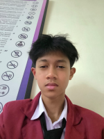
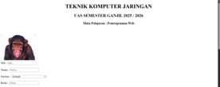

Seorang pelajar yang tertarik pada teknologi, membuat dan mengembangkan website.

Nama: Kaindra Rakha Akilah
Sekolah: SMK Bina Informatika
Kelas: X TKJ
Jurusan: Teknik Komputer dan Jaringan (TKJ)
Pendidikan: SMK
Hobi: Bermain Bola dan Basket
Pengalaman: Merakit PC dan membetulkan jaringan yang error.
Cita-cita: Polisi dan Network Engineer.
Nama saya Rakha Akilah. Saya adalah siswa jurusan TKJ yang tertarik pada dunia komputer, jaringan, dan teknologi. Saya mempelajari perakitan komputer, instalasi sistem operasi, konfigurasi jaringan, serta troubleshooting perangkat komputer dan internet.

Email: rakhaakilah@gmail.com
WhatsApp: 085773062878
Instagram: @rakhaakikah